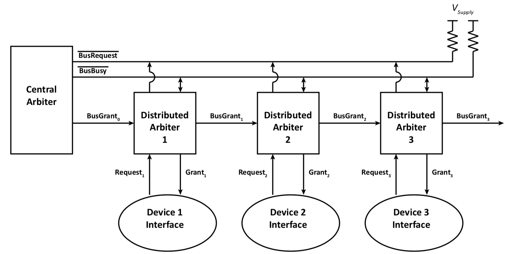
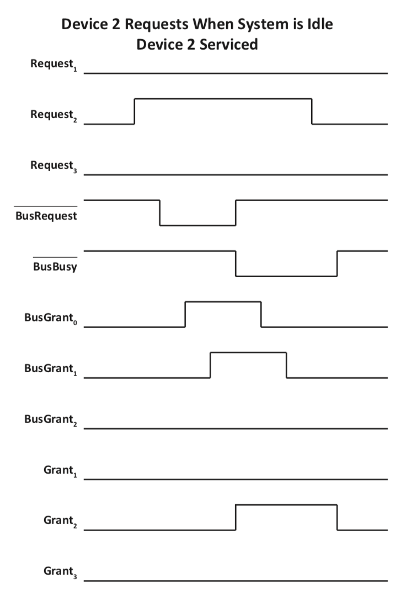
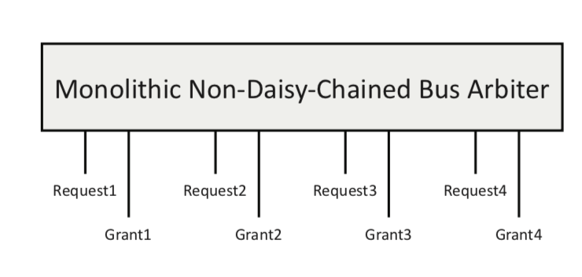

Non-Pre-Emptive Arbitration: Once a master has started using the bus it will continue to use the bus until completion. Specific bus structures may place limits on the maximum number of cycles or the maximum time that a master may keep control of the bus.
this is because it comes with its drawbacks
if you give conrol once, you assume that the device won’t take too long and that all will be fine soon
Pre-emptive arbitration is not considered in this course.
Terminology for Distributed Arbitration
Central Arbiter (CA): The component of the arbitration system responsible for detecting that there is a bus request and causing a grant to be issued, if appropriate.
Distributed Arbiter (DA): The component of the arbitration system that is repeated in each device interface that has a requirement to become a bus master at some time.
The remainder of this section examines the interconnection of these components.
Interconnection with the Other Interface Components
interface1
2-Wire Daisy-Chain
A daisy chain signal is one where you connect devices through other devices.
This was popular for connecting peripherals before CPU’s had many ports. You have to assume here that the Distributed Arbiters are working otherwise your devices won’t be able to work
Arbitration System
Cheap, easy design concept but difficult to make it work well
Central Arbiter
arbitration-2wire-central-arbiter
Asserts BusGrant_0 whenever BusRequest_0 is asserted
Implemented as a simple wire
Approximately zero delay through the central arbiter (t_{CA} \approx 0ns)
Distributed Arbiter
arbitration-2wire-distributed-arbiter
Design of a 2-Wire Daisy-Chain Distributed Arbiter
Straightforward Cases - At most one request \rightarrow no arbitration required.
Case A: The local device interface (i) is not requesting service and no lower priority device interfaces are requesting service. The system is idle.
All inputs are 0 (Request_i = 0, BR_{in} = 0, and BG_{in} = 0)
All outputs are 0 (Grant_i = 0, BR_{out} = 0, and BG_{out} = 0)
Case B: Only the local device interface (i) requests service.
Request_i transitions from 0\to 1 causing BR_{out} to transition from 0\to 1
BG_{in} transitions from 0\to 1 causing Grant_i to transition from 0\to 1
BR_{in} =0 and BG_{out} =0
Case C: Only one or more lower priority device interfaces request service.
BR_{out}=BR_{in}
BG_{out}=BG_{in}
Request_i = 0 and Grant_i = 0
Cases Requiring Arbitration - Two or more simultaneous requests.
Case D: One or more lower priority device interfaces request service while the local device interface (i) is using the bus:
When the local device interface is finished, what should happen?
Case D1: Forward grant immediately (Quick solution) Grant_{i} transitions from 1 \to 0 and BG_{out} transitions from 0\to 1
Case D2: Re-arbitration cycle (Best solution) Grant_{i} transitions from 1\to 0, BR_{out} transitions from 1\to 0 (regardless of BR_{in}), and arbiter waits for BG_{in} to transition from 1\to 0 prior to reasserting BR_{out}
Case E: The local device interface (i) requests service after a lower priority device interface has requested service:
Case E1: If BG_{in} transition from 0\to 1 has not yet occurred, grant locally
Case E2: If BG_{in} transition from 0\to 1 has occurred, too late to grant locally
Notes
Sometimes in Computer Science the cost of doing things fast outweighs doing them the best way.
If you do manage to service he lower priority quick enough then its fine
Case E: there is a region of uncertainty, where there is a window of time in which we may disobey priority, because of the fact that the distributed arbiter lacks global knowledge of the system.
Case B
Case B: Only the local device interface (i) requests service.
Request_i transitions from 0\to 1 causing BR_{out} to transition from 0\to 1
BG_{in} transitions from 0\to 1 causing Grant_i to transition from 0\to 1
The delay through distributed arbiter is shown as t_{DA}, and the central arbiter is shown as t_{CA}
2wire4_1
Request_1 is asserted as long as Device\; 1 wishes to use the bus
No arbitration decision is required since there is only one device requesting
Deassertion of Request_1 results in deassertion of Grant_1
Case C: Remote Request Only - Propagate Grant
Case C: Only one or more lower priority device interfaces request service.
BR_{out}=BR_{in}
BG_{out}=BG_{in}
Request_i = 0 and Grant_i = 0
arbitration-2wire-system-caseC
Waterfall type timings in the diagram
2wire4_2
The request path should always increase, and grant paths should always decrease
2wire4_2a
Request is passed through daisy chain
No arbitration decision is required since there is only one device requesting
Case D1: Remote Request During Bus Use - Propagate Grant
If you propagate the grant, and you only have 2 devices you still obey priority
Case D: One or more lower priority device interfaces request service while the local device interface (i) is using the bus:
When the local device interface is finished, what should happen?
Case D1: Forward grant immediately (Quick solution) Grant_{i} transitions from 1 \to 0 and BG_{out} transitions from 0\to 1
Case D2: Re-arbitration cycle (Best solution) Grant_{i} transitions from 1\to 0, BR_{out} transitions from 1\to 0 (regardless of BR_{in}), and arbiter waits for BG_{in} to transition from 1\to 0 prior to reasserting BR_{out}
If you have more devices in this range, then you sorta see funnel type behaviour in the timing diagram
Despite having a pending remote request, BusRequest_0 is de-asserted when Request_1 is de-asserted to force rearbitration
BusRequest_0 is reasserted when BusGrant_0 is de-asserted
Re-arbitration forces a distributed arbiter to wait for all higher priority devices to return to an idle state
Simultaneous Requests with 2-Wire Arbitration (Cases E1 and E2)
What happens when DA 1 requests the bus shortly after DA 2 has requested the bus?
arbitration-2wire-system-caseE
Simultaneously Pending Request Signals During 2-Wire Arbitration
Case E1, Request_1 occurs early enough that device 1 gets the bus as if it were the first
to request the bus
Case E2, Request_2 precedes Request_1 by sufficient time that Device 2 gets the bus first. This situation means that Grant_i cannot be a simple combinational function of Request_i, BusRequest_i, and BusGrant_{i-1}.
For Case E2 there are two options to consider:
Case E2A: Once BusRequest_1 is removed, Grant_1 is issued without further arbitration by the Central Arbiter (CA). DA 1 would be designed to assume that DA 2 would release the bus quickly enough for DA 1 to immediately use the bus. This approach (like propagating a grant) does not necessarily obey priority order.
Case E2B: Once BusRequest_1 is removed by DA 2’s distributed arbiter, a re-arbitration cycle is initiated.
Note: Assuming non-preemptive service, the arrival of Request_1 does not terminate DA 2’s use of the bus.
Case E1: Remote Request First, Local Shortly After
Some Alternative Designs
Re-Arbitrate for every use of the bus. Option B would require the local unit to ignore all bus grants except if there were a rising edge on the BusGrant_{i-1} signal … as shown in cases E1B and E2B
Permit the local arbiter unit to claim bus if all remote (lower priority) devices have no bus request pending What happens if the local device changes its mind?
If the arbiter releases BusRequest_{i-1}, but before BusGrant_{i-1} is removed and it quickly reasserts BusRequest_{i-1}, there could be 2 bus masters in the system
3-Wire Daisy-Chain Arbitration System
System uses two passive pull-up bus lines and one daisy-chained signal
Devices may request bus usage quicker
arbitration-3wire-system
Notes:
The device asserts request to use, and keeps asserting while you’re still using, and when you’re done you can de-assert
BUT here the requesting is way faster because you are not passing through Distributed signal
3-Wire Daisy-Chain Central Arbiter
arbitration-3wire-central-arbiter
Assert BusGrant_0 whenever \overline{BusBusy} is not asserted and \overline{BusRequest} is asserted
Basically what the signal is saying is that we have BusRequest and we don’t have the BusBusy
The 2 bars on the signals themselves are because of the active-low signals and there is in fact just one inversion required
Implemented using an AND gate and a NOT gate
Finite delay through the central arbiter (t_{CA} \neq 0 ns)
3-Wire Daisy-Chain Distributed Arbiter
arbitration-3wire-distributed-arbiter
Outputs are a function of both inputs and state
Arbiter circuit is implemented as an asynchronous (fundamental mode) design
Finite delay through the distributed arbiter (t_{DA}\neq 0 ns)
Design of a 3-Wire Daisy-Chain Distributed Arbiter
A Distributed Arbiter (DA) associated with any interface wanting to use the bus pulls BusRequest low to request service
A Distributed Arbiter (DA) may take control of the bus whenever it sees a rising edge on the daisy-chain bus grant signal (BusGrant_{i-1}), the bus is not busy (BusBusy = 1), and
the distributed arbiter has a local request (Request_i = 1)
The Distributed Arbiter (DA) associated with the interface using the bus pulls BusBusy low to indicate the bus is in use
3-Wire Daisy Chain Arbitration
arbitration-3wire-priority
3-Wire Daisy Chain Arbitration - Ladder Diagram
arbitration-3wire-ladder
CASE B
3-Wire Daisy Chain Arbitration - Example 1 with Dependencies
3wire-example1-dependencies
One of the key performance benefits, once the bus busy signal goes back to idle, we can quickly assert the next grant.
The Open Collector fundamentally changes the way the arbiter works.
3-Wire Daisy Chain Arbitration - Example 1 with Arbitration and Bus Usage
Same picture as above, but with different layers
3wire-example1-usage
While one device is using the bus we can significantly start the arbitration process.
In this particular arbitration, once we take control of the bus the bus request goes away, we hold the bus using the bus busy line
BUT we still cannot get full overlap of the arbitration, but if there was an extra wire we could imagine acknowledging the request to allow for overlap (i.e. lead to the 4 wire design)
3-Wire Daisy Chain Arbitration - Example 2
3wire-example2
3-Wire Daisy Chain Arbitration - Example 2 with Dependencies
3wire-example2-dependencies
Note: 3-Wire Daisy Chain Arbitration, Bus Busy - Timing Diagram
Three devices
Initially used by interface for device 2
Requests by interface for de- vice 3 then interface for de- vice 1
Use by interface for device 1 then interface for device 2
3wire3_2
NOTES:
Wherever you have a grant signal the BUS_BUSY signal should be low
if you take all the grant signal, and superimpose that, and invert that, you will see the BUS_BUSY signal
4-Wire Distributed Bus Arbitration
Arbitration and bus usage may be overlapped by introducing a third open-collector bus signal (\overline{BusAck})
arbitration-4wire-system
\overline{BusAck} is asserted when the next DA to use the bus receives a BusGrant
NOTES
Central arbiter still remains the same
4-Wire Daisy Chain Arbitration - Example 1
4wire-example1
NOTES
3 device behaviour is interesting
4wire-example1-dependencies4wire-example1-usage
If the system is not idle it will take much longer to figure out which device. The device runs better the more you push it
Summary of the Operational Characteristics of Daisy-Chained Bus Arbitration
Monolithic Arbitration System
A monolithic arbitration system can be built by encapsulating any arbitration system
arbitration-distributed-vs-monolithic
Only the bus requests and bus grants are exposed by the arbitration system
The number of supported devices is fixed
NOTES
You can embed/abstract the logic of the bus arbitration inside of a computer chip
if DA1 fails then all corresponding devices fails
BUT the thing to note is that even a simple AND gate could fail
Modelling the Performance of Daisy Chain Bus Arbitration Systems
To model the performance of daisy chain bus arbitration systems, we will consider the following for 2-wire, 3-wire, and 4-wire systems:
Arbitration delay for both bus idle and bus busy situations
Priority for both bus idle and bus busy situations
Priority uncertainty for both bus idle and bus busy situations
The following timing parameters are used by the model:
Distributed Arbiter Delay (t_{DA}) The delay between a change in an input to the dis- tributed arbiter and a change in one or more outputs. All distributed arbiter delays are treated the same.
Bus Line Delay (t_{BL}). The delay associated with asserting or de-asserting a shared bus line. This model assumes that if a bus line is to be driven, it requires t_{BL} time in addition to any other time, most notably t_{DA}.
Central Arbiter Delay (t_{CA}). The delay between a change in an input to the central arbiter and a change in one or more outputs. This delay has been modelled as a constant. For a 2-wire system where the central arbiter is a wire, t_{CA} = 0.
The mathematical model presented is only an approximation
NOTES
Sets up an approximation model to allow for comparison of all of these arbitration devices.
Makes consistent assumptions across the board
Bus Idle
Arbitration Delay
Consider a request by the n^{th} distributed arbiter in a daisy chain
Assume the bus is idle so the delay between Request and Grant depends only on the
time to decide on the next user
The delay depends upon the daisy chain arbitration system used:
2-wire: Delay through n distributed arbiters in the request chain, and the delay through n distributed arbiters in the grant chain (2 \cdot n \cdot t_{DA})
3-wire: Delay to assert the BusRequest signal, delay through the central arbiter, delay through n distributed arbiters in the grant chain, and the delay to assert the BusBusy signal (n \cdot t_{DA} + 2 \cdot t_{BL} \cdot + t_{CA})
4-wire: Delay to assert the BusRequest signal, delay through the central arbiter, delay through n distributed arbiters in the grant chain, delay to assert the BusAck signal, and the delay to assert the BusBusy signal (n \cdot t_{DA} + 3 \cdot t_{BL} + t_{CA})
For 3-wire and 4-wire, the BusGrant signal is deasserted during bus usage so the time associated with this activity is ignored
Priority
Priority is fixed when the bus is idle:
2-wire: fixed priority starting from the CA
3-wire: fixed priority starting from the CA
4-wire: fixed priority starting from the CA
When the bus is idle, all systems behave similarly in terms of prioritizing requests
Since the bus is initially idle, there is no need to consider the potential implications of grant forwarding
Priority Uncertainty
Priority Uncertainty:
Consider the situation when the bus is idle and there are 2 or more requests:
If device n initially requests the bus and then device i requests the bus more than t_{uncertainty} before device n should receive the bus grant where i \leq n, device i is granted the bus and priority is obeyed
idle1
When the bus is idle, all daisy chain bus arbitration systems exhibit the same uncertainty:
When we have already forwarded grant, and we do get a request on device i before actually granting to device i+k then you’re actually granting to the wrong device
Note
idle1a
Consider the ladder diagram shown for a 2-wire daisy chained bus arbitration system:
Assume the bus is idle, and has been idle for sufficient time to stabilize (i.e., no signal changes are propagating through any of the distributed arbiters)
Assume the nth interface makes a bus request at time trequest n
Interface i can make a request at any time:
If the request is prior to the time marked as CT in
the figure, interface i will become the bus master
If the request arrives after CT, interface n will
become the bus master:
It is important to note that when the request
from device i arrives the bus is idle
It is also important to note that i is the highest
priority interface requesting the use of the bus
In this window of uncertainty, n gets the bus
The natural daisy chain priority may be violated
Bus Busy
Arbitration delay
Consider a request by the n^{th} distributed arbiter in a daisy chain:
Assume that the current user is the c^{th} distributed arbiter where c may be larger or smaller than n
Assume that the bus is busy, so the delay (following the completion of the current operation) is related to the time to decide on the next user
What is the delay between the completion of one user and the start of the next user (t_{arbitration,\; bus\; busy}), assuming that the request by the next user was already present at the DA when the current user finished as bus master?
3-wire: (t^{3-wire}_{arbitration,\; bus\; busy} ) delay to deassert BusBusy, delay through CA, delay through n links in the grant chain including the delay to assert Grant_i and then to assert BusBusy. (delays to deassert the BusRequest and BusGrant signals are within the bus usage time and can be ignored here.) (n \cdot tDA + 2 \cdot t_{BL} + t_{CA})
4-wire: Assume request is greater than t^{4-wire}_{arbitration,\; bus\; idle} before the bus becomes so that arbitration selection process is complete before the previous user has finished using the bus. Thus, t^{4-wire}_{arbitration,\; bus\; busy} is just the time to assert Grant and BusBusy (t_{BL})
NOTES
we see a good improvement from 3 to 4 is because we can actually arbitrate during the time the bus line is busy
Priority
Priority is fixed when the bus is busy:
2-wire: fixed priority starting from the CA when bus usage completes
3-wire: fixed priority starting from the CA when bus usage completes
4-wire: fixed priority starting from the CA when bus usage starts
The time at which arbitration occurs is potentially different:
When the bus is busy, 4-wire daisy chain bus arbitration systems have greater priority uncertainty since arbitration is fully overlapped with bus usage
A 4-wire arbitration system may commit to a lower priority device and then receive a request from a higher priority device while the bus is still busy
NOTES
Notice how 4 wire looks at it from when it starts, while 3 wire looks at when it completes
Priority Uncertainty
Priority Uncertainty:
Consider the situation when the bus is busy and there are 2 or more requests:
If device n initially requests the bus and then device i requests the bus more than t_{uncertainty} before device n should receive the bus grant where i \leq n, device i is granted the bus and priority is obeyed. However, in a 4-wire system, the uncertainty window is increased by the time of current user usage since arbitration occurs earlier.
When the bus is idle, the type of daisy chain bus arbitration system affects the uncertainty:
(3\cdot c+n)\cdot t_{DA} or (c+3\cdot n)\cdot t_{DA}
(n-i)\cdot t_{DA}
3-wire
n\cdot t_{DA} +2\cdot t_{BL} +t_{CA}
(n-i)\cdot t_{DA}
n\cdot t_{DA} +2\cdot t_{BL} +t_{CA}
(n-i)\cdot t_{DA}
4-wire
n\cdot t_{DA} +3\cdot t_{BL} +t_{CA}
(n-i)\cdot t_{DA}
t_{BL} assuming selection complete
(n - i) \cdot t_{DA} + t_{current\; user\; usage}
n, i, and c are defined as follows:
n is the device ID of the first DA to request the bus
i is the device ID of the second DA to request the bus
c is the device ID of the current bus user
Assume n > i without a loss of generality
Non-Daisy-Chained Bus Arbitration Systems
NOT ON THE EXAM
A daisy-chained bus grant signal is not a requirement of a bus arbitration system
A non-daisy-chained bus arbitration system can be built as a monolithic arbiter:

At any given time, only one bus grant signal is asserted
Once a device has been granted use of the bus, it cannot be pre-empted
A fixed number of devices are supported by the system
NOTE TO SELF, you stopped listening at this point
Questions of Interest: Bus Arbitration Questions
Most questions rely on timing diagram + ladder diagram
Terms discussed in this section include: Bus Arbitration and Non-pre-emptive arbitration Priorities in daisy chained bus arbiters.
What is the key feature of daisy chained arbitration techniques? How is this feature replaced in the non-daisy-chained structure?
Assume that the delay through a DA is 9ns and that there is a system with 5 devices that may be bus master. Compare and contrast the t_{uncertainty} among the various arbiters for various bus conditions.
Engineering Questions.
A two-wire arbitration scheme requires the fewest connections and is the best for all uses.
Since 4-wire bus arbiters use more of the available bus time, they are the preferred solution.
The non-daisy-chained bus arbiter is faster than the 3-wire bus arbiter.
MINI NOTE ON DMAs
Q Why do we use DMA? A We use it so that the CPU does not do dumb work. If you want to transfer a lot data from device to memory, it has to do 2 BUS transactions, which is stupid, so you should design an architecture that allows you to transfer data from device interface and put into memory without CPU intervention or vice versa